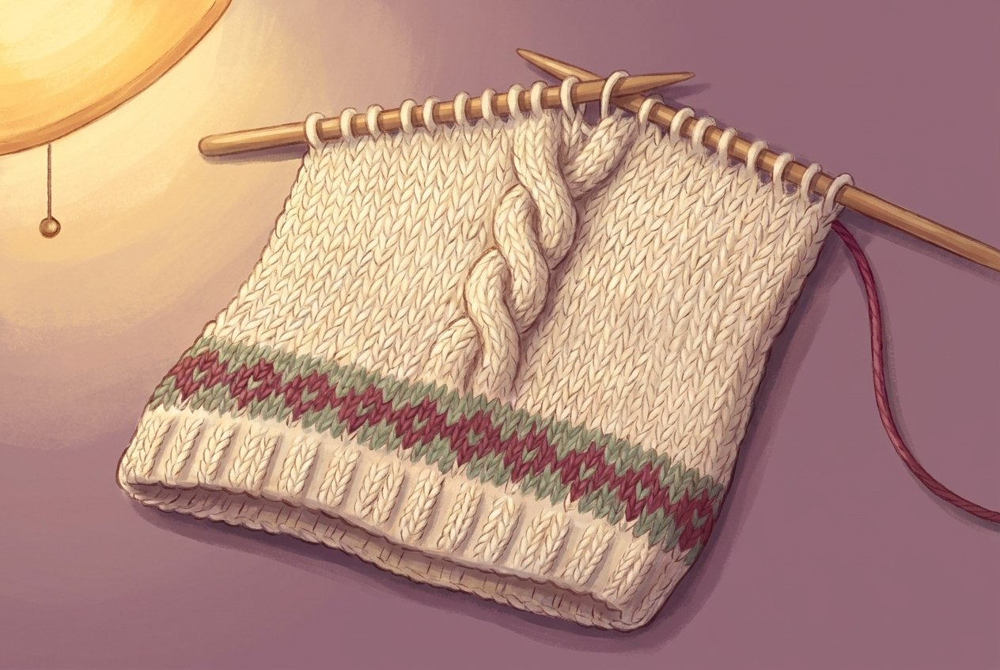
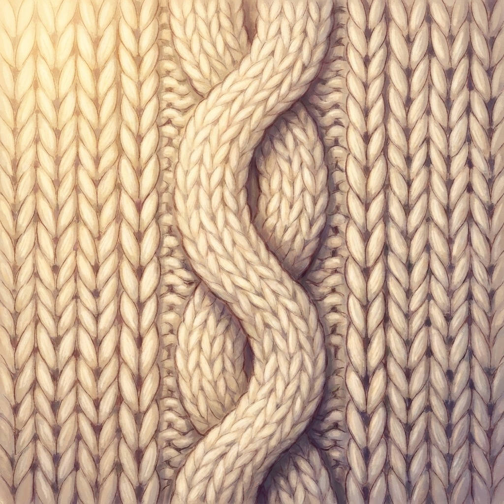

Knit Knack · stitch lab
Space knits · Backspace rips · click the work to knit
(c) Knit it
MarkersCounter
(b) Swatches, 12×12

look target (painted)
(d) Raised cables (Change 2): the Cable Headband and Fisherman Beanie ropes, flat at 3 zooms on wool and chunky, and on the tube

ref-cable.jpg
knit-look.jpg
Fisherman Beanie on the tube (round 13)
(a) Every stitch × every yarn × 3 zooms